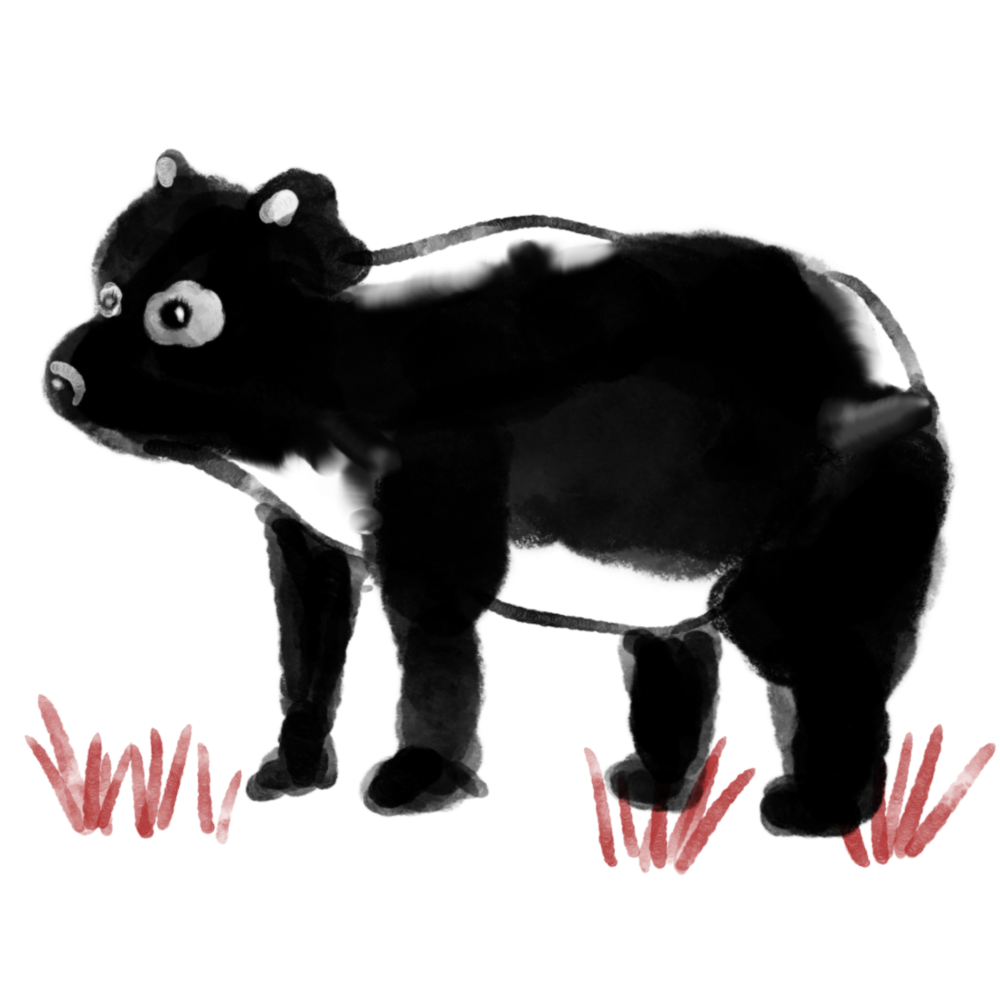

5. Lacking fiber-digesting bacteria causes panda bears to defecate as much as 28 kilograms a day. It seems they are just eating, sleeping, and pooping all day. That’s one of the reasons they are endangered today as humans can find them easily by tracking their feces.
6. Pandas have 24 teeth when they are young and 40 to 42 teeth as adults. Eating bamboo from morning to night is a panda’s most important activity in a day. That means giant pandas possess strong and sharp teeth to bite tough, hard bamboo.
8. China’s southwestern region is their home, including Sichuan, Gansu, and Shaanxi provinces. These areas are very damp and rainy, which is good for pandas’ living conditions.
9. A female panda can give birth to about 6-12 cubs in her lifetime.
10. Similar habitats and diets make some experts believe that giant pandas and red pandas are the same species. However, according to a scientific test, the red panda belongs to the raccoon family while the giant panda is part of the bear family.
1. Giant pandas are large, rare members of the bear family and are found in Sichuan Province, China. Giant pandas are 80 to 120 kilograms in weight with a round face, big dark eye patches, a fat body, and a black and white coat.
2. A giant panda is a type of bear and an omnivorous animal. Their food can consist of grass, fruits, insects, rats, small fish, and wildebeests. However, bamboo shoots are giant pandas’ favorite and main food.
3. Giant pandas don’t have the same teeth and fiber-digesting bacteria to help them absorb nutrients from bamboo like other plant-eating animals. That’s why a panda bear needs to spend 14 to 16 hours a day eating 12 to 38 kilograms of bamboo.
4. To eat easily, pandas’ six “fingers” help them grasp and maneuver bamboo. Like other bears, giant pandas have plantigrade feet so they can walk like humans and their entire foot touches the ground when walking.
7. Only just over 1,000 panda bears are left in the world and most of these pandas are being raised in zoos. Habitat loss and fragmentation are the main factors for pandas becoming endangered. Giant pandas are now regarded as “China’s treasure” and are protected and raised at zoos.
11. Panda cubs are usually born during September as most giant pandas are in heat in April. A newborn panda cub is just 25 grams in weight and looks like a rat without its gray coat.
12. In fact, adult pandas do have a few enemies, including wolves, leopards, and weasels. But these animals focus on young pandas rather than adult panda bears.
13. The panda’s ancestor is Ailurarctos (cat bear), a type of extinct bear that lived up to 8 million years ago at half the size of a modern giant panda.
14. A newborn panda baby is pink, blind, and with little fur, resembling a baby badger. The black and white fur comes later, after about 21 days.
15. Panda bears are much larger than the teddy bear version you may have in your home. An adult panda is over 45 kilograms in weight and 1.5 meters in height.
16. It’s funny to see a fat panda hanging from a branch in a tree but they are actually really good at climbing trees.
17. Morning is pandas’ most active period so don’t miss seeing them at this time of day because otherwise all you will see is sleeping pandas.
18. Panda Chi Chi was the original panda for the WWF logo.
19. One of the reasons most travelers visit Chengdu is to see the giant pandas.
20. Qizai is the only completely brown panda in the world.